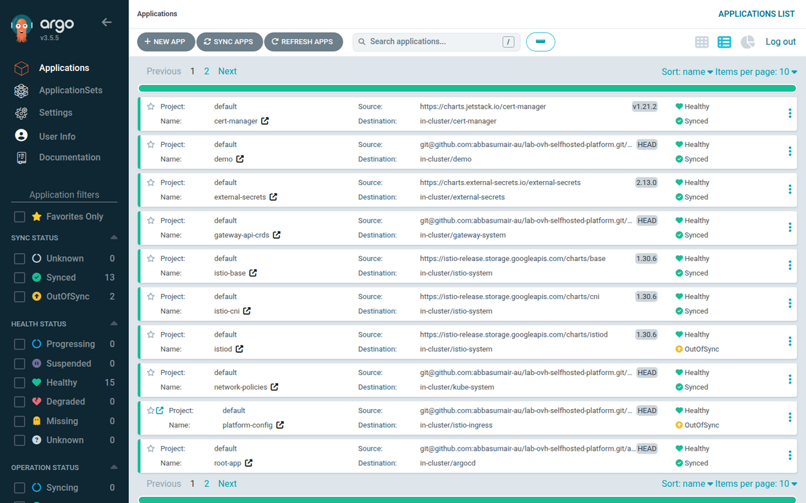
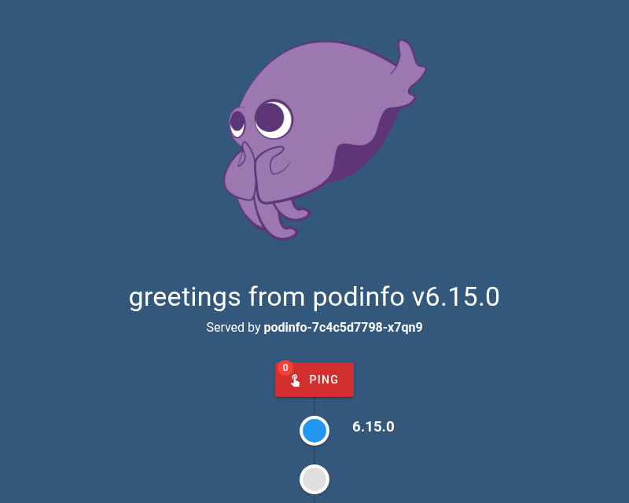
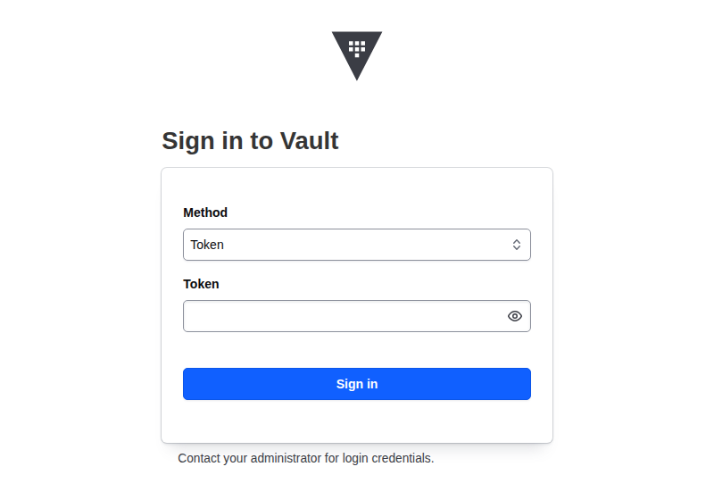
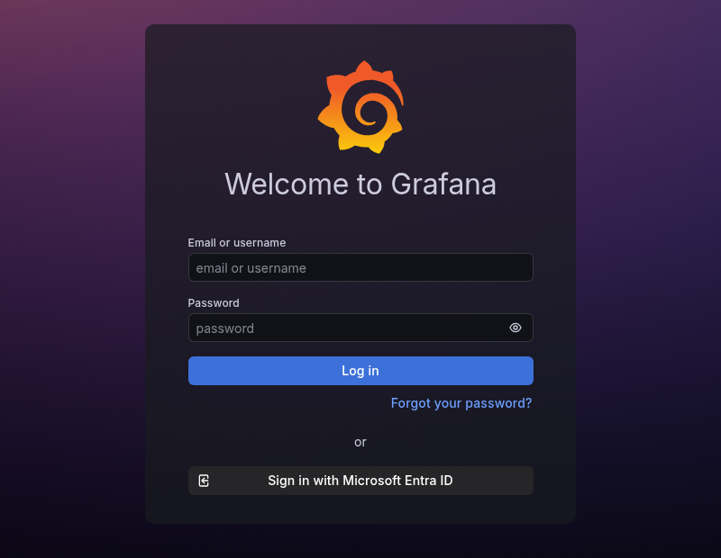

I wanted a lab that behaves like a real platform: GitOps, a service mesh, a secrets manager, metrics, and single sign-on. But I only had one OVH VM with 8 GB of RAM. This is the story of getting that stack to converge on a box that small, and everything that broke on the way.
I paired with an AI coding agent that ran directly on the VM for the hands-on work. Every change still went through a small pull request that I reviewed and merged. The repo ended the session with 32 PRs, and that count is part of the story.
The stack
- k3s with flannel, kube-proxy, Traefik and servicelb all switched off.
- Cilium as CNI and kube-proxy replacement, with default-deny network policies.
- Istio ambient (ztunnel, istio-cni, istiod) with Gateway API as ingress. No sidecars, which matters on 8 GB.
- Argo CD in an app-of-apps layout. Everything else is installed from Git.
- cert-manager with a self-signed CA for a wildcard certificate.
- Vault (single node) plus External Secrets, so no secret ever lives in Git.
- VictoriaMetrics + Grafana for metrics, and podinfo as a demo workload.
- Microsoft Entra ID as the OIDC provider for Grafana and Argo CD.
Nothing is exposed to the internet. The Istio gateway listens on a NodePort and is reached over Tailscale. For hostnames I skipped DNS entirely: grafana.<tailnet-ip>.nip.io resolves to the tailnet address, so I get real hostnames, real TLS and zero registrar work.
Everything is a pull request
The rules I set for the repo were simple: one branch and one PR per intent, under 400 lines, a body that explains the why and the rollback, requests and limits on every workload, and nothing secret in Git. Argo CD then reconciles main into the cluster.
That discipline paid off. When a change broke something, the fix was one reviewable diff, and the history reads like a log of lessons learned.

What broke, and what it taught me
1. The firewall was eating the CNI
With UFW enabled, pod traffic silently vanished. Cilium's interfaces (cilium_host and the lxc* devices) need explicit allow rules. The symptom was a node that looked fine and pods that could not talk to anything.
2. A DNS rule that blackholed DNS
External Secrets reported ClusterSecretStore InvalidProviderConfig with context deadline exceeded. The Vault login was timing out, and the root cause was DNS. My baseline policy used Cilium's L7 DNS rules (rules.dns with a wildcard), and in namespaces that are not in the ambient mesh that rule path dropped queries. Switching the baseline to plain L4 DNS egress fixed it. I proved it in a scratch namespace before touching the real policies.
3. Ambient mesh needs HBONE and probe SNAT
podinfo returned 503 through the gateway even though the pod was healthy. In ambient mode the gateway talks to workloads over HBONE on TCP 15008, and my default-deny policy blocked it. I also had to allow the kubelet probe source address (169.254.7.127, the ztunnel SNAT) or readiness probes failed. The route to the app has more hops than it looks like: Tailscale, NodePort, gateway, ztunnel, pod.

4. Death by OOMKill
8 GB goes quickly when a Kubernetes control plane, a mesh and a metrics stack share a node. In order, the OOM kills were: the Argo CD application controller, VictoriaMetrics vmsingle, vmagent, and finally Grafana itself, which is CPU and memory hungry while it loads its bundled dashboards.
The two changes that mattered most were setting honest requests and limits everywhere, and dropping the very high-cardinality kube-apiserver histogram series (apiserver_request_duration_seconds_bucket and friends) at scrape time. That alone removed a large share of the metrics volume. The funniest culprit was my own screenshot tooling: a headless Chrome was the biggest process on the box more than once, so it now gets killed after every run.
5. Vault is a manual step, on purpose
Vault runs as a single node with one key share, initialised and unsealed by hand. The init output stays on the host and never touches Git. External Secrets then pulls values into Kubernetes secrets through a ClusterSecretStore using Kubernetes auth. The trade-off is that Vault needs unsealing after every reboot. For a lab I accept that; for production I would use auto-unseal.

Single sign-on with Entra ID
Grafana and Argo CD both log in through Entra ID using OIDC. The client secrets are created in Entra, stored in Vault, and delivered to the pods by External Secrets. They never appear in the repo.
The sharp edges were small but real:
- Argo CD only resolves
$secretname:keyreferences from secrets that carry the labelapp.kubernetes.io/part-of: argocd. The ExternalSecret template has to add it. - Right after
az ad app create, follow-up calls can fail because the new app has not replicated yet. Retry rather than assume a bug. - In a tenant that enforces MFA, a plain
az loginis not enough. Use--tenantwith--use-device-code. - Argo CD's own values are applied by Helm, not by Git, so changing them means a
helm upgradeon the node.

What I would tell my past self
On a small node, the platform is not the hard part. The hard part is the budget: every default-deny policy, every mesh hop and every memory limit is a decision you have to make on purpose.
- Test network policy changes in a scratch namespace before they hit shared ones.
- Set requests and limits from day one, then raise limits only when you see an OOMKill.
- Drop metrics you will never query. It is the cheapest memory you will ever save.
- Keep secrets out of Git by design, not by discipline: Vault plus External Secrets made that automatic.
- Small PRs turn debugging into documentation.
Next up: back up the Vault init material properly, rotate the Entra client secrets before they expire, and bring the optional observability integrations back once the memory budget allows it.